Group the Files -
The Group by option in Windows File Explorer allows you to categorize files and folders into groups based on specific criteria. This can make it easier to find and manage your files by visually organizing them into related groups.
Method 1: Using the Right-Click Menu
1. Open the folder where you want to group the files.
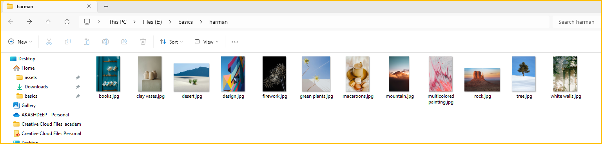
2. Right-click on an empty space in the folder and select Group by.
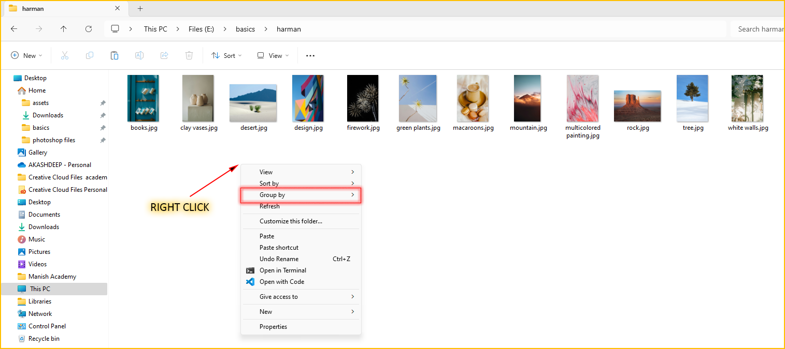
3. Different group creterias will be displayed after you click Group by.
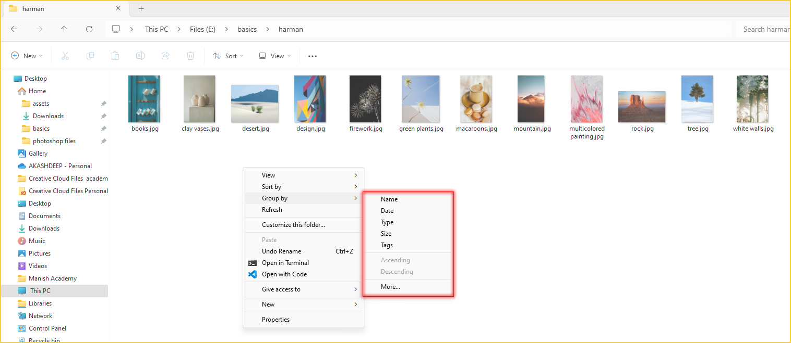
4. Let's Try them One by One. 
(i). From the group by options, first select - Name.
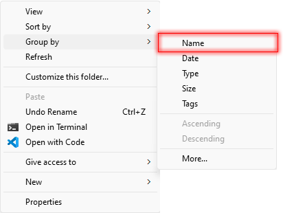
- The following is the view of the files that you will get after selecting Name.
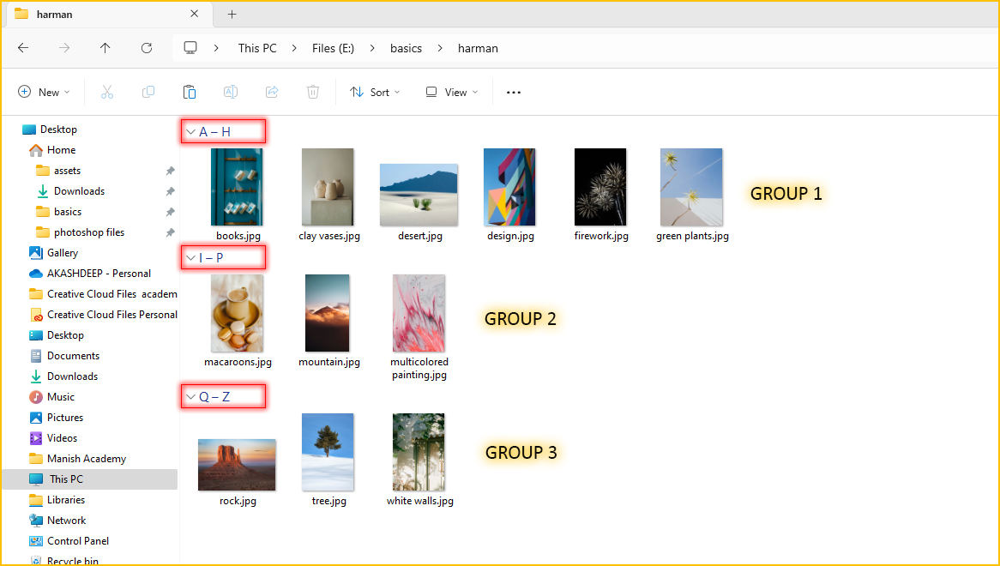
This option groups files alphabetically by their names  in ascending order and is useful for quickly finding files starting with a specific letter.
in ascending order and is useful for quickly finding files starting with a specific letter.
(i). From the group by options, again select - Name option.
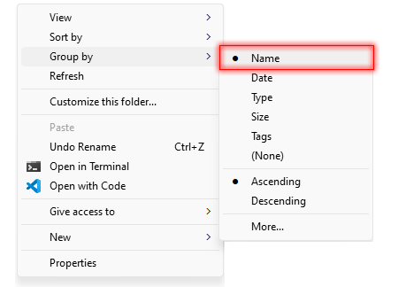
Now, the files will be grouped by their names in descending order, , earlier they were in ascending order.
, earlier they were in ascending order.
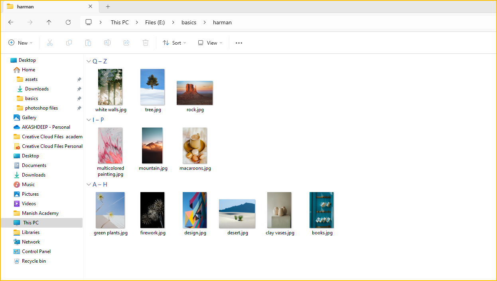
(ii). Now we will group the following files by Date Modifed.
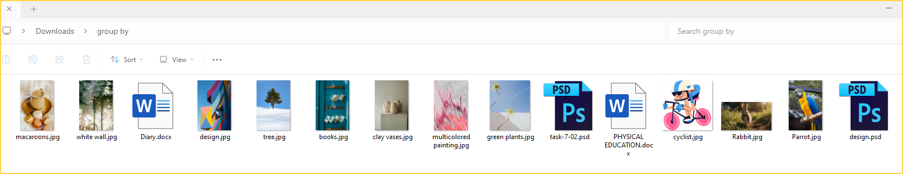
From the group by options, select - Date.
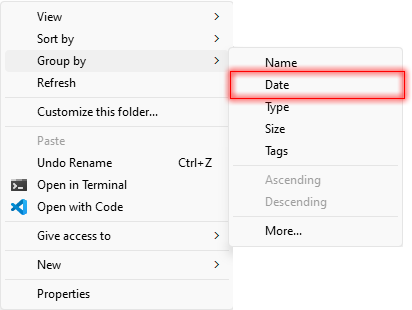
- The following is the view of the files that you will get after grouping by date modified.
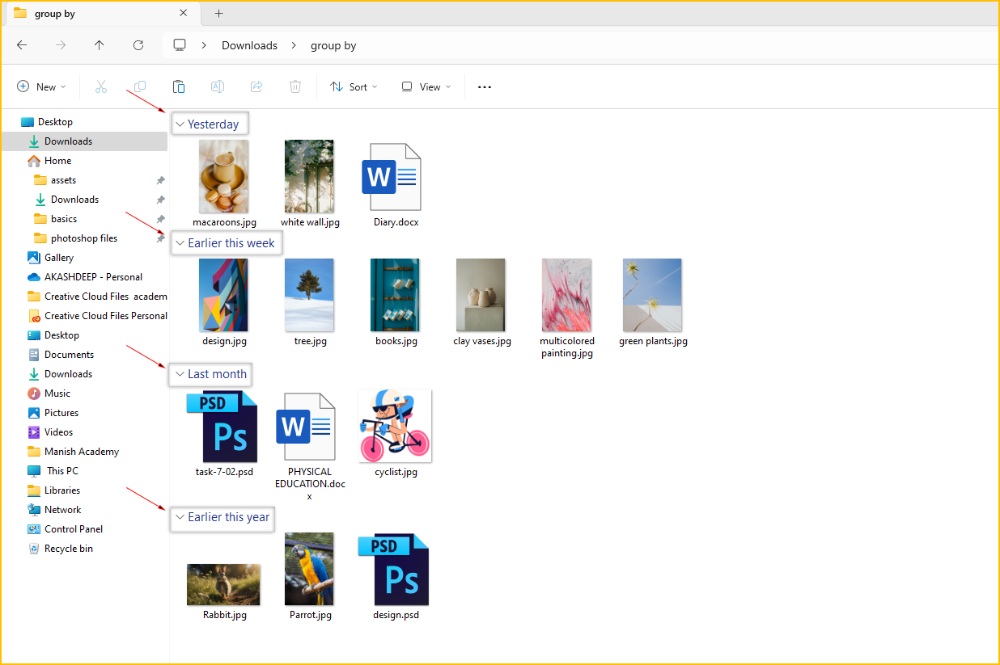
This option group files by the date and time they were last modified and is helpful for organizing files by recent activity.
(iii). Suppose I want to delete the photoshop files in the following folder. Selecting them one by one and deleting them will be a difficult process. For that, we will group the files by type.
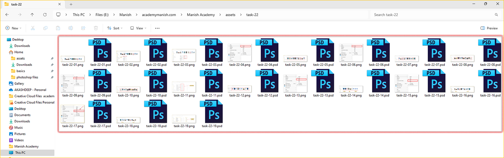
From the group by options, select - type . This option groups files by their file type (extension).
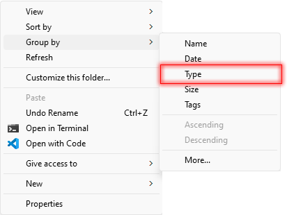
- The following is the view of the files that you will get after grouping by type.
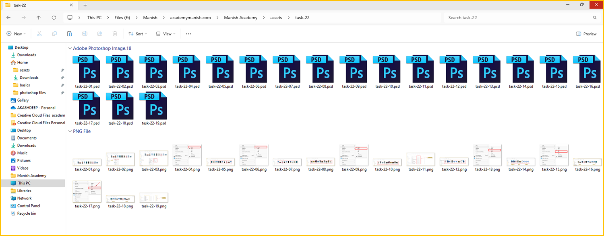
Now, you can easily select the photoshop files and delete them. This option is useful for grouping similar types of files together, such as all Word documents (.docx), PDFs (.pdf), and images (.jpg) etc.
(iv). Now we will group the following files by size.
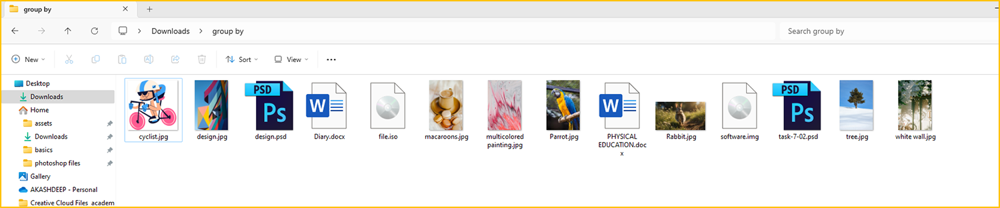
From the group by options, select - size.
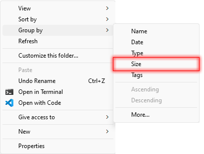
- The following is the view of the files that you will get after grouping by size - in this case, largest to smallest.
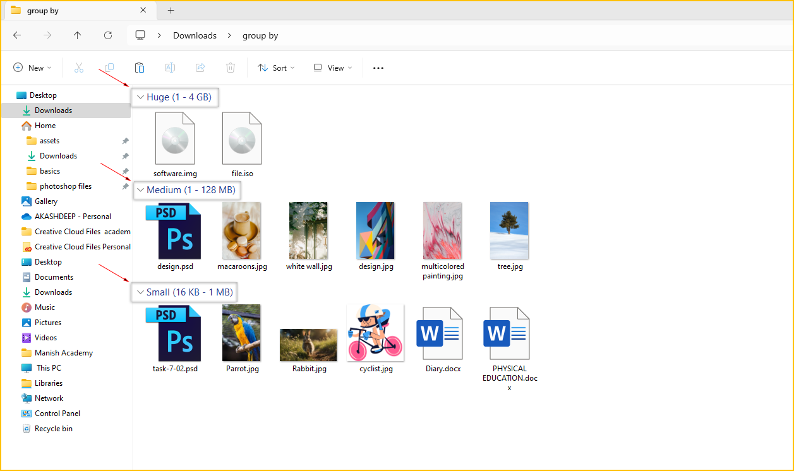
This option group files by their size, from smallest to largest or vice versa and is useful for identifying large/small files that may need to be managed.
(iv). Now we will remove the grouping from the following files which we applied previously.
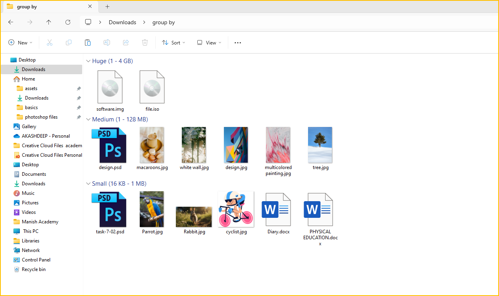
(iv). From the group by options, select - None.
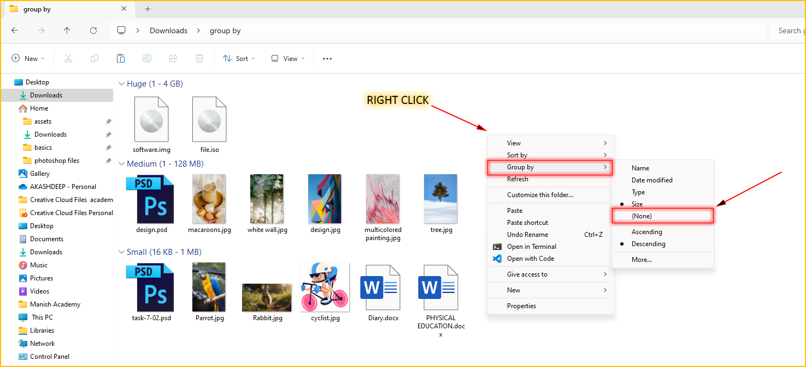
- This will remove any existing grouping and display all files and folders in a continuous list.
.
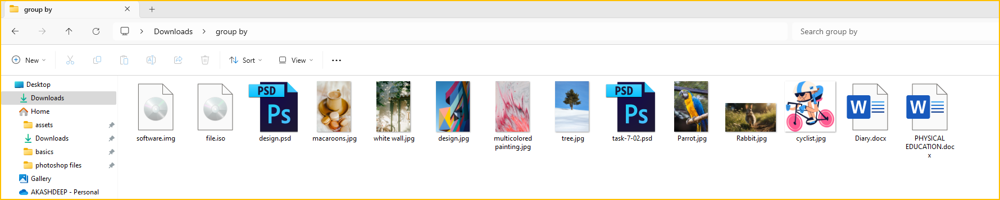
*This option is useful when you want to see all your files and folders without any categorization.